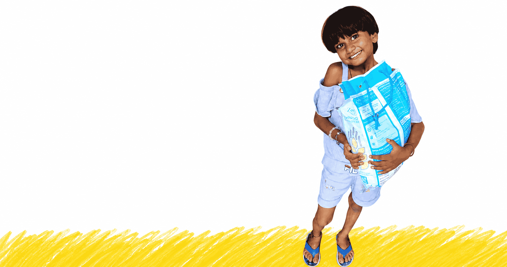

Six focused programs, run directly by our team in Prayagraj and across Uttar Pradesh - each with real numbers behind it.
On the banks of the Ganges in Handia, Prayagraj, hundreds of boatmen families live day to day, ferrying pilgrims for ₹200–300 a day, with no way to send their children to a formal school. ACD set up a dedicated open-air Pathshala right where these families live - no travel, no fees, no barriers.
Our volunteer teachers cover Hindi, English, Mathematics, Science and life skills. We provide uniforms, notebooks, and stationery.
A hungry child cannot learn. Through our partnership with Swiggy, we provide freshly prepared, hygienic mid-day meals to every child at our school - every single day. Balanced meals including rice, dal, sabzi, roti, and seasonal fruits are delivered hot and fresh, ensuring no student has to choose between hunger and education.
Children enrolled
Boatmen families reached
Meal partner


When disaster strikes, families in kutcha housing near flood-prone rivers can lose everything overnight. Our field volunteers - already embedded in local communities - move within hours, not days.
Relief kits include food rations, clean water, medicines, blankets and hygiene essentials, delivered door to door across 12+ districts of Uttar Pradesh within 24 hours of a crisis.
Relief kits delivered
Districts covered

In Prayagraj, we renovate and construct clean, functional sanitation facilities in government and community schools - ensuring children, especially girls, have access to safe, hygienic toilets.
Poor sanitation is one of the quiet reasons girls drop out once they reach adolescence. Fixing it directly improves attendance and keeps children - especially girls - in school.

Education is the most powerful tool to break the cycle of poverty. ACD runs open-air classrooms, provides school supplies, and sponsors tuition for children in rural Uttar Pradesh who would otherwise never see the inside of a classroom.
Our tutors - many of whom are local college students - teach literacy, numeracy, English, and life skills. We also provide uniforms, bags, and notebooks so that financial barriers never stand between a child and their dreams.
Children enrolled
Learning centres
Attendance rate
Hunger is not just about food - it robs children of their ability to learn, play, and grow. ACD runs community kitchens and food distribution drives that provide hot, nutritious meals to undernourished children and families in the most underserved districts.
Our volunteers cook and serve fresh meals using locally sourced ingredients. During festivals and special occasions, we organize large-scale drives that feed hundreds in a single day. We also partner with local farmers and grocery shops to reduce food waste and maximize reach.
Meals served
Community kitchens
Local partners



ACD works with communities across India to prevent child marriage and protect girls' rights to education, health and safety. Its grassroots approach focuses on awareness, empowering girls through support networks, identifying and stopping potential child marriages, and helping families access government schemes.
ACD also supports girls' education and school re-enrolment, while engaging parents, adolescents, teachers and local leaders to challenge harmful social norms and create safer, more supportive communities.
Every program above runs on donations, volunteer time, and CSR partnerships. Here's how you can join in.